도시계획기사 (2019-04-27 기출문제)
1과목: 도시계획론
1. 1967년 도시 내의 상업 · 업무지역을 중심형 상업지구(nucleation), 가로변 상업지구(ribbon), 특화지구(specialized area)로 구분한 학자는?
- 프라우푸트(Proudfoot)
- 사핀과 카이저(Chapin & Kaiser)
- 베리(Berry)
- 무쓰(Muth)
(정답률: 74%)

2. 토지이용에서 도시문제를 야기하는 대표적인 요인으로 보기 어려운 것은?
- 이용주체간의 경합
- 외부효과
- 토지의 난개발
- 계획성 있는 토지이용계획
(정답률: 89%)
3. 재해관리정보시스템 구축을 위한 기본조사 항목과 가장 관계가 없는 것은?
- 방재관련 업무 분석
- 표준안 및 시스템 구축 지침 작성
- 데이터베이스 개념설계 및 기술 수요 분석
- 재해관련 부서 간 네트워킹 체계 및 업무 협조 체계 구축
(정답률: 72%)
4. 기반시설로서 광장의 구분에 해당하지 않는 것은?
- 공중광장
- 일반광장
- 경관광장
- 건축물부설광장
(정답률: 69%)
5. 학자와 계획안의 연결이 틀린 것은?
- Ebenezer Howard - 전원도시
- Tony Garnier - 공업도시
- P. Abercrombie - 대런던계획
- Frank Lloyd Wright - 빛나는 도시
(정답률: 80%)
6. 상업지역 이용인구 40000명, 1인당 평균상면적 15m2, 건폐율 50%, 공공용지율 40%, 평균층수가 10층인 경우 상업지역의 소요면적은?
- 20.0ha
- 15.8ha
- 12.5ha
- 10.0ha
(정답률: 74%)
7. 지리정보시스템(GIS)에서 활용하는 자료에 대한 설명으로 옳은 것은?
- GIS의 자료는 크게 도형자료와 속성자료로 구분된다.
- 래스터 자료는 자료 저장과 표현의 기본 단위로 점(point)을 이용한다.
- 래스터 자료는 저장의 기본 단위 크기를 크게 할수록 정밀도가 향상된다.
- 자료 구조 측면에서 GIS자료는 그리드(grid)와 래스터(raster) 자료로 구분된다.
(정답률: 71%)
8. 국토계획의 개념으로 틀린 것은?
- 국토계획은 전 국토를 대상으로 하는 계획이다.
- 국토계획은 국토에서 일어나는 여러 가지 인간 활동의 공간적 배분 문제를 다루는 공간계획이다.
- 국토계획은 국토의 공간구성과 관련되는 모든 분야가 망라되는 종합계획이다.
- 국토계획은 지방자치단체가 주체가 되어 수립한 계획을 종합한 계획이다.
(정답률: 88%)
9. 도시계획이론에 대한 설명으로 틀린 것은?
- 합리적 계획 모형은 합리성과 의사 결정을 위한 일련의 선택 과정을 강조한다.
- 정치 경제 계획 모형(Political Economy Planning)은 자본주의 사회 계층 간의 갈등은 도시 계획의 집행 결과에 따른 현상으로 조명되야 한다고 주장한다.
- 점진적 계획(Incremental Planning)은 인간 합리성의 한계를 인정하고 지속적인 조정과 적용을 통해 계획의 목표를 추구하는 접근방법을 제시한다.
- 옹호적 계획(Advocacy Planning)은 공공정책 결정을 위한 기준을 제시하는 기술관료적 역할을 중시한다.
(정답률: 76%)
10. 독시아디스(C.A. Doxiadis)가 주장하는 3차원의 공간에 대한 4차원의 시간에 초점을 맞춘 미래 도시 개념은?
- 연담도시
- 다이나폴리스
- 메트로폴리스
- 메갈로폴리스
(정답률: 69%)
11. 도시계획이론으로서 옹호적 계획(Advocacy Planning)을 주창한 학자는?
- C. Lindblom
- E. Etizioni
- P. Davidoff
- H. Simon
(정답률: 84%)
12. 주택지의 말단부에서는 자동차와 사람이 공존하는 것이 더 바람직하며, 주택지 내 도로는 단순한 교통시설이 아니라 시민생활의 터전이 되어야 한다는 생각으로 네덜란드의 델프트에서 처음 등장한 보차공존도로 방식은?
- 본엘프(woonerf)
- 커뮤니티몰(community mall)
- 거주환경지역(environmental area)
- 보행자데크(pedestrian deck)
(정답률: 82%)
13. 머디(R. A. Muride, 1997)가 미국의 여러 도시들을 대상으로 한 사회공간구조의 분석 결과 밝혀낸 다핵 패턴을 이루게 되는 유형에 해당하지 않는 것은?
- 사회·경제적 지위
- 가족구조
- 인종그룹
- 사회제도구조
(정답률: 54%)
14. 토지이용의 밀도 유형과 측정지표가 잘못 연결된 것은?
- 1인당주거면적 = 주거건물면적 / 가구수
- 용적률 = 건물연면적 / 대지면적
- 건폐율 = 건축면적 / 대지면적
- 호수밀도 = 주택수 / 대지면적
(정답률: 76%)
15. 도시조사에 이용되는 지적도에 대한 설명이 틀린 것은?
- 토지대장에 등록된 토지의 경계를 밝혀주는 공부다.
- 필지별 토지의 소재, 지번, 지목, 경계 등 소유권의 범위를 표시하고 있다.
- 필지 경계 외에도 지형 및 건물의 배치가 표기되어 있어 도시계획에 있어 필수적인 자료다.
- 도면상의 지적과 공부상의 면적이 일치하지 않는 지적불부합의 문제가 있다.
(정답률: 61%)
16. 비용편익분석에서 경제성을 평가하는 지표가 아닌 것은?
- B/C Ratio
- Multiplier
- NPV
- IRR
(정답률: 82%)
17. 현재 시행되고 있는 토지 관련 부담금의 종류가 아닌 것은?
- 「개발이익 환수에 관한 법률」에 따른 개발부담금
- 「개발제한구역의 지정 및 관리에 관한 특별조치법」에 따른 개발제한구역 보전부담금
- 「기반시설 부담금에 관한 법률」에 따른 기반시설부담금
- 「대도시권 광역교통 관리에 관한 특별법」에 따른 광역교통시설부담금
(정답률: 42%)
18. 도시계획에서의 아래의 설명에 해당하는 GIS 활용분야는?
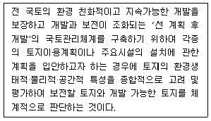
- 토지적성평가
- 토지이용계획
- 토지보전가치평가
- 국토관리평가
(정답률: 71%)
19. 우리나라 최초의 도시계획법이라고도 볼 수 있으며, 지역지구의 법적 근거를 최초로 마련한 법규는?
- 조선시가지계획령
- 토지구획정리사업법
- 도시계획법
- 건축법
(정답률: 77%)
20. 지속가능한 도시가 추구하여야 할 기본 목표가 아닌 것은?
- 환경부하가 높은 첨단도시
- 도시경관의 개선 및 보전
- 환경친화적 교통·물류체계의 정비
- 쾌적한 도시공간의 정비 및 확보
(정답률: 87%)
2과목: 도시설계 및 단지계획
21. 케빈 린치가 도시환경의 이미지를 분석할 때 정의한 3가지 구성 요소가 아닌 것은?
- 정체성(Identity)
- 구조(Structure)
- 의미(Meaning)
- 행동장면(Behavior Setting)
(정답률: 74%)
22. 단지 조사 시 등고선도의 활용만으로 가능한 분석내용은?
- 토양토심
- 국지기후
- 지면경사
- 지하수망
(정답률: 85%)
23. 어린이공원의 규모 및 유치거리 기준이 옳은 것은?
- 1500m2 이상, 250m 이하
- 2000m2 이상, 250m 이하
- 2500m2 이상, 300m 이하
- 3000m2 이상, 300m 이하
(정답률: 78%)
24. 지구단위계획 수립 시 환경관리계획의 목표로 가장 거리가 먼 것은?
- 개발로 인한 자연환경의 피해 최소화
- 자연생태계 보존 및 순환체계의 유지
- 자연에너지의 활용 및 에너지 절감
- 불투수포장 확대로 인한 물순환체계의 유지
(정답률: 83%)
25. 생활편익시설의 배치 시 노선형에 비해 집중형으로 배치하였을 때의 특징으로 옳지 않은 것은?
- 시설 상호간의 유기적 관련성이 높다.
- 활력있는 가로 분위기를 조성할 수 있다.
- 상점의 입장에서는 충분한 주차공간의 확보가 어렵다.
- 공공공간의 공동 이용으로 용지의 면적이 절약된다.
(정답률: 69%)
26. 범죄예방환경설계(CPTED)와 관련성이 가장 적은 것은?
- 자연적 접근 통제
- 교통 편의성
- 영역성 강화
- 자연적 감시
(정답률: 73%)
27. 다음 중 경관분석 방법에 해당하지 않는 것은?
- 기호화 방법
- 군락측도방법
- 사진에 의한 방법
- 메쉬(mesh)에 의한 방법
(정답률: 61%)
28. 계획 인구 5만명, 주택용지율 75%의 단지계획에서 1인당 택지 점유율이 30m2일 때, 계획대상 단지의 면적은 얼마인가?
- 11.25 ha
- 66.66 ha
- 150 ha
- 200 ha
(정답률: 46%)
29. 등고선과 단면의 관계가 틀린 것은?(오류 신고가 접수된 문제입니다. 반드시 정답과 해설을 확인하시기 바랍니다.)
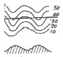
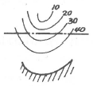
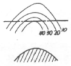
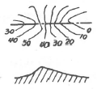
(정답률: 64%)
30. 근린생활권의 위계 중에서 주민 간에 면식이 가능한 최소단위의 생활권으로, 유치원·어린이 공원 등을 공유하는 반경 약 250m가 설정기준이 되는 것은?
- 인보구
- 근린기초구
- 근린분구
- 근린주구
(정답률: 59%)
31. 사업부지와 공공시설로 제공되는 부지의 용적률이 다를 경우에는 공공시설 부지의 용적률과 사업부지의 용적률 비율(“가중치”라 한다)을 감안하여 용적률 완화 범위를 정할 수 있게 되는데 다음 조건에서 가중치는? 「용적률 800% 상업지역에서 공공시설인 공개공지 제공부지 200m2와 용적율 200% 주거지역에서 도로시설제공부지 100m2인 경우」
- 0.7
- 0.75
- 0.8
- 0.85
(정답률: 50%)
32. 다음 중 저밀도 개발 대상지로서 가장 바람직한 지역은?
- 평탄하고 도심지로의 접근로상에 위치한 고지가지역
- 주위에 상업시설이 밀집되어 있고 재개발이 추진되고 있는 지역
- 구릉지로서 자연경관과 지형이 어우러진 지역
- 역세권에서 위치하여 대중교통의 연계성이 우수한 소규모 지역
(정답률: 82%)
33. 아래 설명에 적합한 가로망 형태는?
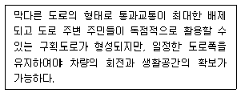
- cul-de-sac
- U자형(loop형)
- 방사형
- 격자형
(정답률: 78%)
34. 학자가 주장한 주요 개념의 연결이 틀린 것은?
- 고든 쿨렌(Gordon Cullen) : 연속장면(Serial Vision)
- 케빈 린치(Kevin Lynch) : 가독성(Legibility)
- 카밀로 지테 : 연속경관(Choregraphic Sequence)
- 필립 티엘(Philip Thiel) : 스마트 스페이스(Smart Space)
(정답률: 57%)
35. 도시지역 내 지구단위계획구역을 지정할 수 있는 용도지구가 아닌 것은?
- 경관지구
- 보호지구
- 개발진흥지구
- 리모델링지구
(정답률: 69%)
36. 교차점광장의 결정 기준이 아닌 것은?
- 차량과 보행자를 원활히 소통시키기 위하여 필요한 곳에 설치한다.
- 다수인의 집회·행사·사교 등을 위하여 필요한 경우에 설치한다.
- 혼잡한 주요도로의 교차지점 중 필요한 곳에 설치한다.
- 자동차전용도로의 교차지점인 경우에는 입체교차방식으로 설치한다.
(정답률: 79%)
37. 하수배제 방식 분류식(Separate System)에 관한 설명으로 옳은 것은?
- 합류식에 비해 우천시 다량의 토사가 유입된다.
- 수로를 통폐합하고 우수배제 계통을 종합적으로 관리할 수 있다.
- 기존 측구를 유지할 경우 관리 및 미관상 문제가 발생할 수 있다.
- 오수, 오수관거의 2계통을 건설하는 것에 비해 저렴하나 오수관거만을 건설하는 것에 비해 고가이다.
(정답률: 49%)
38. 지구단위계획 중 건축물의 용도에 관한 계획에서 공공적 성격이 강하여 특별히 확보해야 하는 시설의 경우에 적용하는 용도제한의 종류는?
- 지정
- 권장
- 불허
- 지하층
(정답률: 73%)
39. 지구단위계획이 다른 도시계획행위와 구별되는 특징에 대한 설명이 틀린 것은?
- 도시 전체를 대상으로 하지 않고 도시 내부의 특정 지구로 한정된다.
- 공공의 일상적 공간을 특정지구의 여건에 비추어 바람직한 장소로 만들어가는 것을 목표로 한다.
- 지구단위계획은 3차원적 요소에도 관여한다.
- 지구단위계획은 장소를 구성하는 물리적 요소가 갖고 있는 개체적 특성을 중시하지만 다른 공간계획은 그것들이 이루는 집합된 형태에 중점을 둔다.
(정답률: 65%)
40. 일반적으로 도시공간에서 건물의 높이와 수평거리의 비율이 얼마일 때부터 폐쇄감을 느끼기 시작하는가?
- 4:1
- 2:1
- 1:2
- 1:4
(정답률: 50%)
3과목: 도시개발론
41. 부채에 의한 재원조달 방식이 아닌 것은?
- 회사채
- 자산담보부증권
- 투자조합
- 대출
(정답률: 66%)
42. 토지상환채권의 발행 규모는 그 토지상환채권으로 상환할 토지·건축물이 해당 도시개발사업으로 조성되는 분양토지 또는 분양건축물 면적의 얼마를 초과하지 아니하도록 하여야 하는가?
- 2분의 1
- 3분의 1
- 4분의 1
- 5분의 1
(정답률: 59%)
43. 개발권양도제(TDR)의 목적으로 가장 거리가 먼 것은?
- 납세자 보호
- 역사적 건축물 보호
- 과밀지역의 개발 제한
- 사업 인프라비용 절감
(정답률: 55%)
44. 기업도시의 기능별 유형에 해당하지 않는 것은?
- 산업교역형
- 지식기반형
- 관광레저형
- 특성화형
(정답률: 42%)
45. 민관합동 부동산 개발금융방식인 프로젝트파이낸싱(project financing)의 자금조달 형태에 관한 설명이 틀린 것은?
- 자기 자본투자는 투자 회수 순위에서 가장 높은 순위를 지니므로 위험도가 가장 낮다고 할 수 있다.
- 자기 자본투자자는 전략적 투자자와 재무적 투자자로 분류되면 재무적 투자자는 사업에 의한 배당 수익에 투자목적이 있다.
- 선순위 채권(senior debt)은 프로젝트파이낸싱에서 가장 큰 비중을 차지하는 자금이다.
- 선순위 채권(senior debt)은 대부분 상업은행으로부터의 차입금이 이에 해당되며 이자수익을 목적으로 투자한다.
(정답률: 66%)
46. 도시 및 주거환경정비법에서 정의하고 있는 정비사업이 아닌 것은?
- 주거환경개선사업
- 재개발사업
- 도시환경정비사업
- 재건축사업
(정답률: 69%)
47. 재개발방식에 따른 재개발 유형에 해당하지 않는 것은?
- 공공시설정비재개발
- 수복재개발
- 전면재개발
- 보존재개발
(정답률: 77%)
48. 도시개발사업의 평가를 위한 지표인 수익성지수(PI)를 산정하는 식으로 옳은 것은?
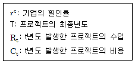
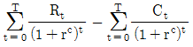
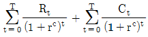
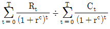
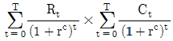
(정답률: 76%)
49. 지역지구제에 대한 설명이 틀린 것은?
- 용도지역에 따라 건축물의 용도 이외에 건축물의 형태, 규모의 규제가 가능하다.
- 지역지구제는 공공의 건강과 복리 증진을 위해 경찰권을 사용하여 개인의 토지이용에 제한을 가하는 법적 배경을 가진다.
- 용도지역지구제에서 지역과 지역, 지역과 지구, 지구와 지구간은 상호 모순되지 않는 한 중복 지정이 가능하다.
- 용도구역은 도시집중과 그에 따른 무질서한 시가화를 방지하고 계획적·단계적으로 시가지를 조성하기 위해 지정한다.
(정답률: 63%)
50. 도시재정비 촉진을 위한 특별법에 따른 재정비촉진지구 지정 면적을 기준 면적의 2분의 1까지 완화하여 적용하는 기준이 옳은 것은?
- 인구가 100만 이상이고 150만 미만인 광역시 또는 시의 주거지형 : 30만 제곱미터 이상
- 인구가 100만 미만인 광역시 또는 시의 주거지형 : 20만 제곱미터 이상
- 기반시설이 열악한 지역으로서 정비구역이 4 이상 연접한 지역의 주거지형 : 10만 제곱미터 이상
- 산지로 주거여건이 열악하면서 경관을 보호할 필요가 있는 지역의 주거지형 : 15만 제곱미터 이상
(정답률: 32%)
51. 마케팅전략의 3단계인 STP전략 중 새로운 제품에 대해 다양한 욕구, 행동, 특성을 가진 소비자들을 동질적인 집단으로 나누는 것은?
- 시장 세분화
- 표적시장 선정
- 전략적 판촉
- 제품 포지셔닝
(정답률: 66%)
52. 미국의 샌프란시스코(1981년)를 필두로 하여 도심재개발에 적용된 연계정책(Linkage Policy)에 대한 설명으로 가장 거리가 먼 것은?
- A. Keating, G. McMahon 등이 링키지(Linkage)란 용어를 사용하였다.
- 링키지에 대한 정의의 폭이 각기 다른 것은 연계프로그램의 정책적 내용이 차츰 확대되어 나가고 있음을 반영하는 것으로 볼 수 있다.
- 시당국이 신규로 상업적 개발을 허가해 주는 대신 개발업자에게 일정한 주택, 고용기회, 보육시설, 교통시설 등의 건설을 촉구하는 다양한 프로그램으로 정의하기도 한다.
- 업무, 상업시설 등을 고려하여 고소득 주택과의 연계만을 추구하는 것이 일반적이다.
(정답률: 79%)
53. 도시개발수요를 분석하기 위한 정성적 예측모형 중 조사하고자 하는 특정사항에 대하여 전문가 집단을 대상으로 반복 앙케이트를 수행하여 의견을 수집하는 방법은?
- 델파이법
- 지수평화활법
- 박스젠킨스법
- 의사결정나무기법
(정답률: 80%)
54. 자산담보부증권(ABS)에 대한 설명으로 옳지 않은 것은?
- 자산을 기초로 발행하는 경우 대차대조표에는 영향을 미치지 않는 부외금융이라는 이점이 있다.
- 사업주의 신용이 낮은 경우에도 자금을 조달 할 수 있다.
- 대출과 달리 유가증권의 형태로 유동화 한다.
- 다른 수단에 비하여 간편하지만 운용보수가 높다.
(정답률: 54%)
55. Jenson과 Meckling(1976)이 대리인 문제로부터 발생하는 금전적·비금전적 비용을 분류한 내용에 해당하지 않는 것은?
- 감시비용
- 거래비용
- 잔여손실
- 확증비용
(정답률: 43%)
56. 개발사업 시행주체에 따른 도시개발방식에 대한 설명으로 가장 거리가 먼 것은?
- 공공개발은 국가나 지방자치단체가 직접 시행하는 도시개발이며, 공사 또는 지방공기업이 시행하는 경우는 공공개발에서 제외된다.
- 합동개발이란 공공이 사업주체가 되고 민간이 자본과 기술을 투입하여 택지를 조성하는 공영개발방식으로 이해되기도 한다.
- 민간개발이란 토지소유자 또는 토지소유자로 구성된 조합, 순수 민간기업 등이 사업시행자가 되는 경우를 말한다.
- 제3섹터개발은 관·민 양 부문이 공동출자하여 설립된 반관반민의 법인조직이 개발하는 것을 말한다.
(정답률: 66%)
57. 도시개발사업에서의 인·허가에 대한 설명이 틀린 것은?
- 허가(許可)란 법령에 의하여 금지되어 있는 행위를 해제하여 적법하게 하는 것을 말한다.
- 인가(認可)란 제3자의 행위를 보충하여 그 법률상의 효력을 완성시키는ㄴ 행위를 의미한다.
- 승인(承認)은 국가 또는 지방자치단체가 특정 행위에 대하여 부여하는 동의·승낙 등을 의미한다.
- 허가를 요하는 행위를 허가없이 행하거나, 인가를 받지 않고 한 행위는 처벌의 대상이 된다.
(정답률: 54%)
58. 도시재정비 촉진을 위한 특별법이 규정하는 재정비촉진계획의 내용이 아닌 것은?
- 경관계획
- 인구·주택 수용계획
- 교육시설, 문화시설, 복지시설 등 기반시설 설치계획
- 분양계획
(정답률: 71%)
59. 국토의 계획 및 이용에 관한 법률에서 개발로 인하여 기반시설이 부족할 것으로 예상되나 기반시설을 설치하기 곤란한 지역을 대상으로 건폐율이나 용적률을 강화하여 지정하는 구역은?
- 용도구역
- 기반시설부담구역
- 개발밀도관리구역
- 입지규제최소구역
(정답률: 67%)
60. 버그가 구분한 도시화의 단계 중 아래 설명에 해당하는 것은?
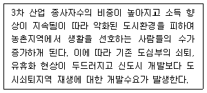
- 도시화 단계(stage of urbanization)
- 교외화 단계(stage of suburbanization)
- 반도시화 단계(stage of durbanization)
- 재도시화 단계(stage of reurbanization)
(정답률: 50%)
4과목: 국토 및 지역계획
61. 총 고용이 50만 명인 어느 지역의 경제기반승수가 2라면, 기반활동 고용이 1만 명 증가할 때 총 고용은 어떻게 변하는가?
- 51만 명으로 증가
- 52만 명으로 증가
- 53만 명으로 증가
- 54만 명으로 증가
(정답률: 65%)
62. 로렌츠 곡선(Loranz curve)을 통해서 파악할 수 있는 것은?
- 지역고용구조
- 지역생산구조
- 지역소득분배
- 지역소득수준
(정답률: 49%)
63. 도시순위규모법칙에 따른 q값이 과거 1.0에서 현제 2.0으로 증가한 어는 나라의 도시체계에 관한 설명으로 가장 옳은 것은?
- 과거보다 도시화의 속도가 2배로 증가하였다.
- 과거보다 수위 도시 또는 소수의 몇몇 대도시에 더욱 많은 인구가 집중하였다.
- 과거에는 도시 인구의 분포가 균등하지 못하였으나 현재는 균등한 분포에 근접하고 있다.
- 과거에는 인구분포가 균형을 이루었으나 현재는 주요 도시의 인구가 농촌 인구의 2배가 되었다.
(정답률: 64%)
64. 성장거점이론의 기본개념과 가장 거리가 먼 것은?
- 파급효과(Spread effect)
- 선도산업(Leading industry)
- 극화효과(Polarization effect)
- 경쟁효과(Competition effect)
(정답률: 65%)
65. 과밀억제권역으로부터 이전하는 인구와 산업을 계획적으로 유치하고 산업의 입지와 도시의 개발을 적정하게 관리할 필요가 있는 지역에 해당하는 권역은?
- 개발제한권역
- 개발유도권역
- 자연보전권역
- 성장관리권역
(정답률: 63%)
66. 다음 중 최소비용이론에 입각하여 공업입지이론을 제안한 학자는?
- 웨버(A. Weber)
- 로쉬(A. Loesch)
- 튀넨(Von Thuenen)
- 크리스탈러(W. Christaller)
(정답률: 60%)
67. 다음 중 지역문제의 발생 원인으로 가장 거리가 먼 것은?
- 지역주민들의 요구 수준의 차이
- 지역 내 특정 자연자원의 부존여부와 입지조건의 차이
- 정부가 추진하는 선(先)성장, 후(後)분배의 경제개발 정책방향
- 해당 지역 지배 산업의 전 세계 또는 다른 지역의 산업들과의 경쟁력 수준
(정답률: 57%)
68. 국토 및 지역계획수립을 위한 자료조사방법 중 1차 자료가 아닌 것은?
- 면접조사
- 설문조사
- 현지조사
- 통계자료조사
(정답률: 82%)
69. 다음 중 가장 큰 규모의 공간단위는?
- 메갈로폴리스
- 메트로폴리스
- 인구밀집지역(DID)
- 표준대도시통계지역
(정답률: 74%)
70. 제4차 국토종합계획 수정계획(2011~2020)의 주요 내용으로 가장 거리가 먼 것은?
- 점적 개방(3개축)을 중심으로 국토 골격 형성
- 해외 자원 확보 및 공동개발 추진
- 행정구역을 초월한 5+2 광역경제권
- 수도권의 경쟁력 강화 및 계획적 성장관리
(정답률: 48%)
71. 다음 중 국토기본법상 국토관리의 기념이념으로 옳지 않은 것은?
- 환경친화적 국토관리
- 국토의 균형있는 발전
- 경쟁력 있는 국토 여건의 조성
- 거점개발에 의한 집적이익의 추구
(정답률: 81%)
72. 지속가능한 개발(Sustainable Development)의 개념에 대한 설명으로 옳지 않은 것은?
- 환경오염 규제만을 강화하는 개발 방법
- 지구의 환경용량 내에서 삶의 질을 향상시키는 개발
- 미래세대 수요충족을 저해하지 않으면서 현세대의 수요충족을 보장하는 개발
- 자연과 사회체계의 생명력을 보호하면서 기초적인 모든 서비스를 모든 공동체 주민에게 제공하는 것
(정답률: 75%)
73. 지역 간 균형과 사회계층 간 형평성을 중시하는 개발 방식을 주요 전략으로 하며 지역생활권개발의 이론적 근거가 되는 것은?
- 중심지이론
- 경제기반이론
- 기본수요이론
- 성장거점이론
(정답률: 59%)
74. 국토의 계획 및 이용에 관한 법률에서 명시하고 있는 구역에 해당하지 않는 것은?
- 개발제한구역
- 국토자연구역
- 수산자원보호구역
- 입지규제최소구역
(정답률: 62%)
75. 다음 중 부드빌(Boudeville)에 의한 지역 분류로 옳은 것은?
- 과밀지역 - 중간지역 - 후진지역
- 동질지역 - 결절지역 - 계획권역
- 보완지역 - 대체지역 - 발전지역
- 성장지역 - 침체지역 - 쇠퇴지역
(정답률: 68%)
76. 합리적 계획모형을 비판하는데서 출발하여 계획은 자본주의 생산양식의 관점에서 분석되어야 하며 특정 이념에만 기능하는 대신 역사적 관계와 정치·사회·경제적 맥락을 전반적으로 조명하여야 한다고 강조하는 지역계획모형은?
- 옹호적 계획(advocacy planning) 모형
- 혼합주사적 계획 (mixed planning) 모형
- 교류적 계획(transactive planning) 모형
- 정치경제 계획 (political economy planning) 모형
(정답률: 75%)
77. 매년 1천 2백만 원의 임대료수익(R)을 영구히 주는 토지의 현재가치(PV)는? (단, 연간이자율(i)은 10%이다.)
- 4천 8백만 원
- 9천 6백만 원
- 1억 2천만 원
- 무한대
(정답률: 52%)
78. 국토계획평가를 실시한 후 그 결과를 심의하는 위원회는?
- 국토계획위원회
- 국토정책위원회
- 국토평가위원회
- 중앙도시계획위원회
(정답률: 54%)
79. 지역생활권이론의 기본적인 개념으로서 도농통합전략에 대한 설명으로 옳은 것은?
- 성장거점이론의 실천적 개념이다.
- J.Friedmann과 K.Popper가 주장하였다.
- 기본 아이디어는 도농지구(Agropolitan)이다.
- 도농 간 차이를 인정하면서 보완적이지만 기능적으로 통합되지 않는다.
(정답률: 57%)
80. 프로젝트 A의 실행에 따라 다음과 같이 비용과 편익이 발생한다면 순현재가치(Net Present Value)는? (단, 당해연도부터 편익이 발생하였으며, 할인율은 8%, 단위는 백만 원이다,)
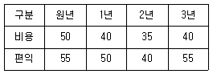
- 30.45백만 원
- 40.45백만 원
- 50.45백만 원
- 60.45백만 원
(정답률: 33%)
5과목: 도시계획관계법규
81. 도시공원 및 녹지 등에 관한 법률상 공원시설에 관한 설명으로 옳지 않은 것은?
- 점용허가의 대상이다.
- 도시공원 조성계획에 포함된다.
- 민간인도 허가를 받아 관리할 수 있다.
- 도시공원의 효용을 다하기 위하여 설치되는 시설이다.
(정답률: 55%)
82. 도시공원의 구분에 따른 규모 기준으로 옳은 것은?
- 묘지공원 - 10000m2 이상
- 체육공원 - 30000m2 이상
- 어린이공원 - 1500m2 이상
- 도보권 근린공원 - 20000m2
(정답률: 76%)
83. 중앙도시계획위원회에 관한 설명으로 옳은 것은?
- 공무원이 아닌 위원의 수는 10명 이상으로 하고, 그 임기는 3년으로 한다.
- 위원장·부위원장 각 1명을 포함한 30명 이상 40명 이하의 위원으로 구성한다.
- 광역도시계획·도시·군계획·토지거래계획허가구역 등 국토교통부장관의 권한에 속하는 사항의 심의 업무를 수행한다.
- 위원은 관계 중앙행정기관의 공무원과 도시·군계획과 관련된 분야에 관한 학식과 경험이 풍부한 자 중에서 위원장이 임명하거나 위촉한다.
(정답률: 47%)
84. 수도정비계획법령상 과밀부담금의 감면에 관한 내용으로 옳지 않은 것은?
- 국가나 지방자치단체가 건축하는 건축물에는 부담금을 부과하지 아니한다.
- 「과학기술기본법」에 따른 과학연구단지에는 부담금을 부과하지 아니한다.
- 건축물 중 수도권만을 관할하는 공공법인(지점을 포함한다)의 사무소에 대하여는 부담금을 부과하지 아니한다.
- 「도시 및 주거환경정비법」에 따른 재개발사업으로 건축하는 건축물에는 부담금의 100분의 50을 감면한다.
(정답률: 47%)
85. 국토교통부장관이 개발제한구역의 지정 및 해제를 도시·군관리계획으로 결정할 수 있는 경우로 가장 거리가 먼 것은?
- 도시의 무질서한 확산을 방지할 필요가 있는 경우
- 올림픽 등 국제행사에 대비하여 대규모 자연공간을 확보할 필요가 있는 경우
- 국방부장관의 요청으로 보안상 도시의 개발을 제한할 필요가 있다고 인정되는 경우
- 도시민의 건전한 생활환경을 확보하기 위하여 도시의 개발을 제한할 필요가 있는 경우
(정답률: 65%)
86. 도시개발법상 도시개발구역을 지정할 수 없는 자는?
- 구청장
- 도지사
- 광역시장
- 특별시장
(정답률: 80%)
87. 도시 및 주거환경정비법상 분양신청 현황을 기초로 한 관리처분계획 수립 시 포함되어야 하는 사항이 아닌 것은?
- 분양설계
- 분양대상자의 주소 및 성명
- 관리처분계획의 인가 연월일
- 분양대상자별 종전의 토지 또는 건축물 명세
(정답률: 38%)
88. 주택법상 사업주체가 대통령령으로 정하는 호수 이상의 주택건설사업을 시행하는 경우 지방자치단체가 설치하는 도로 및 상하수도시설에 대하여 국가가 보조할 수 있는 설치비용의 범위는?
- 그 비용의 전부
- 그 비용의 30%
- 그 비용의 50%
- 그 비용의 75%
(정답률: 73%)
89. 국토의 계획 및 이용에 관한 법령에 따른 용도지구 중 문화재·전통사찰 등 역사·문회적으로 보존가치가 큰 시설 및 지역의 보호와 보존을 위하여 필요한 지구는?
- 복합개발진흥지구
- 특정개발진흥지구
- 중요시설물보호지구
- 역사문화환경보호지구
(정답률: 82%)
90. 하나의 도시지역 안에 있어서의 도시공원의 확보기준은 해당도시지역 안에 거주하는 주민 1인당 얼마 이상으로 하는가?
- 6m2
- 7m2
- 8m2
- 9m2
(정답률: 78%)
91. 관광진흥법령상 관광객 이용시설업의 종류에 해당하지 않는 것은?
- 전문휴양업
- 종합휴양업
- 관광유람선업
- 일반유원시설업
(정답률: 58%)
92. 택지개발촉진법령상 수의계약으로 공급할 수 있는 택지로 부적합한 것은?
- 「주택법」에 따른 사업주체 중 국가. 지방자치단체 또는 국토교통부령으로 정하는 공공기관에 공급할 경우
- 면적이 100만m2 이상인예정지구안에서 지형조건 및 다양한 시설용도 등을 고려하여 복합적이고 입체적인 개발이 필요한 경우
- 도로, 학교, 공원, 공용의 청사 등 일반인에게 분양할 수 없는 공공시설용지를 국가, 지방자치단체, 그 밖에 법령에 따라 해당 공공시설을 설치할 수 있는 자에게 공급할 경우
- 주택조합의 조합원에게 공급하여야 할 주택을 건설하는 데 필요한 토지 면적의 2분의 1이상을 취득한 주택조합이 그 토지의 전부를 관련 법률에 따른 협의에 응하여 시행자에게 양도하였을 때 해당 주택조합에 국토교부령으로 정하는 면적의 범위에서 택지를 공급하는 경우
(정답률: 39%)
93. 택지개발촉진법령상 택지개발지구 안에서의 관할 특별자치도지사·시장·군수 또는 자치구의 구청장의 허가를 받아야 하는 행위가 아닌 것은?
- 토지의 형질변경
- 죽목의 벌채 및 식재
- 건축물의 건축 또는 공작물의 설치
- 재해 복구 또는 재난 수습에 필요한 응급조치를 위하여 하는 행위
(정답률: 72%)
94. 수도권정비계획법의 정의에 부합되지 않는 것은?
- “수도권”이란 서울특별시와 대통령령으로 정하는 그 주변 지역을 말한다.
- “공업지역”이란 「국토기본법」에 따라 지정된 공업지역을 말한다.
- “수도권정비계획”이란 「국토기본법」에 따른 국토종합계획을 기본으로 하여 관련 조항에 따라 수립되는 계획을 말한다.
- “인구집중유발시설”이란 학교, 공장, 공공청사, 업무용 건축물, 판매용 건축물, 연수시설, 그 밖에 인구 집중을 유발하는 시설로서 대통령령으로 정하는 종류 및 규모 이상의 시설을 말한다.
(정답률: 42%)
95. 택지개발촉진법상 환매권에 관한 설명으로 옳지 않은 것은?
- 환매권자는 환매로써 제3자에게 대항할 수 있다.
- 보상금에 가산하는 환매가액은 보상금 산정일부터 환매일까지의 법정이자이다.
- 수용한 토지 등의 전부 또는 일부가 필요 없게 되었을 때에 환매권자는 필요 없게 된 날부터 1년 이내에 환매할 수 있다.
- 환매권자는 토지 등의 수용 당시 받은 보상금에 대통령령으로 정한 금액을 가산하여 시행자에게 지금하고 이를 환매할 수 있다.
(정답률: 39%)
96. 국토의 계획 및 이용에 관한 법률에 따른 기반시설에 속하지 않는 것은?
- 광장·공원·녹지 등 공간시설
- 도로·철도·항만·공항·주차장 등 교통시설
- 아파트·연립주택·다세대주택 등 주거시설
- 하수도, 폐기물처리 및 재활용시설, 빗물저장 및 이용시설 등 환경기초시설
(정답률: 75%)
97. 산업입지 및 개발에 관한 법률에 따른 산업단지에 해당하는 것으로만 나열된 것은?
- 국가산업단지, 일반산업단지, 농공단지
- 국가산업단지, 지역산업단지, 농공단지
- 국가산업단지, 도시산업단지, 농공산업단지
- 국가산업단지, 일반산업단지, 특수산업단지
(정답률: 58%)
98. 주차장 법령상 단지조성사업등으로 설치되는 노외주차장에 경형자동차 및 환경친화적 자동차를 위한 전용주차구획을 노외주차장 총 주차대수의 얼마 이상이 되도록 설치하여야 하는가?
- 100분의 3
- 100분의 5
- 100분의 10
- 100분의 15
(정답률: 61%)
99. 시가화조정구역에서 특별시장·광역시장·특별자치시장·특별자치도지사·시장 또는 군수의 허가를 받아 할 수 있는 행위에 대한 내용으로 옳지 않은 것은?
- 입목의 벌채, 조림, 육림, 토석의 채취, 그 밖에 대통령령으로 정하는 경미한 행위
- 건축물의 건축 및 공작물 중 대통령령으로 정하는 종류의 공작물을 설치하는 행위
- 농업·임업 또는 어업용의 건축물 중 대통령령으로 정하는 종류와 규모의 건축물이나 그 밖의 시설을 건축하는 행위
- 마을공동시설, 공익시설·공공시설, 광공업 등 주민의 생활을 영위하는 데에 필요한 행위로서 대통령령으로 정하는 행위
(정답률: 33%)
100. 관광진흥법상 관광개발기본계획에 따라 구분된 권역을 대상으로 수립하는 권역별 관광개발계획에 포함하는 사항으로 옳지 않은 것은?
- 환경보전에 관한 사항
- 관광지 연계에 관한 사항
- 관광권역별 관광개발의 기본방향에 관한 사항
- 관광자원의 보호·개발·이용·관리 등에 관한 사항
(정답률: 37%)